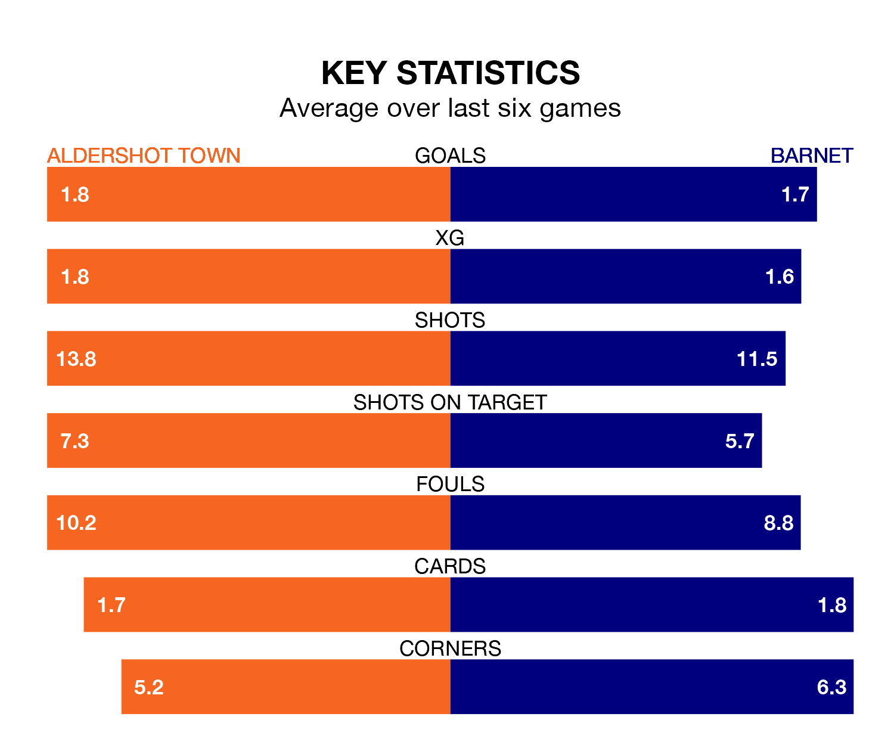

Tuesday's late match between Aldershot Town and Barnet promises to be one for the neutrals, as two of the National League's most free-scoring sides go head-to-head.
Ahead of the game at the Electrical Services Stadium, the Shots and the Bees sit joint-third and second in the goal-scoring charts, with 58 and 63 goals respectively.
Striker Lorent Tolaj leads the way for the home side, having bagged 15 goals in their 33 games to date.
And Nicke Kabamba has been the main man in the opponents' penalty box for Barnet, with 18 goals.
Barnet are third in the table after 32 games, of which they have won 18 and drawn five, earning 59 points.
Aldershot are four places behind the Bees in seventh, with 15 wins and six draws putting them on 51 points.
In the last 10 years, Aldershot and Barnet have played each other on 13 occasions. Aldershot won two of them, Barnet nine, and they drew twice.
On average, the Shots scored 0.8 goals and the Bees 1.8 in those matches.
Their last meeting was on September 19, when Barnet won 2-1 at home.
Town are in reasonable form in the National League, with three wins and two draws from their last six games.
With two wins and a draw over that period, the visitors' form is worse – they have taken seven points from 18, compared to the Shots' 11.
Aldershot's last match was on Saturday, a 2-0 win against Altrincham, with Tolaj and Tyler Jayden Frost getting the goals for the Shots.
Barnet beat Fylde 4-2 last time out, also on Saturday, with Callum Stead, Gatlin O'Donkor, Harry James Pritchard and Reece Hall-Johnson on the scoresheet.
Updated: 12:18 (UTC), 19/02/24